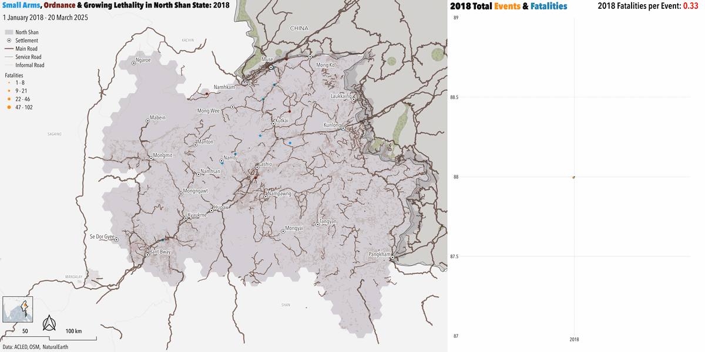
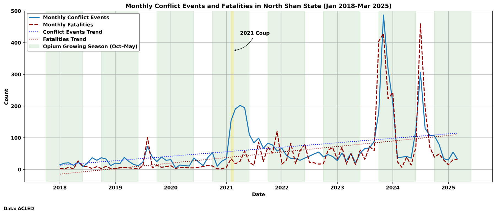
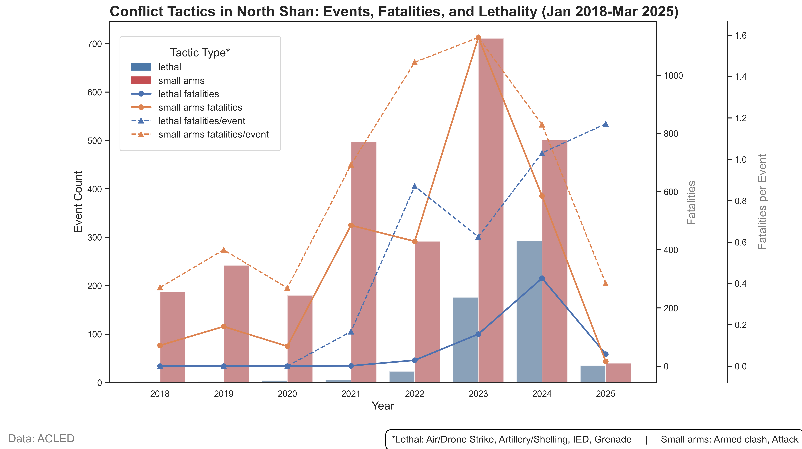
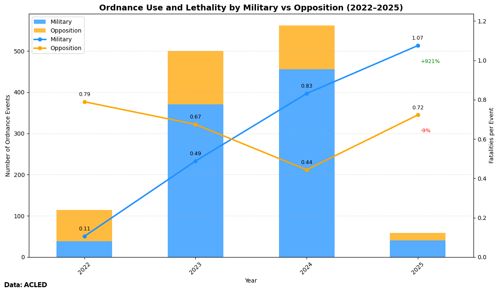
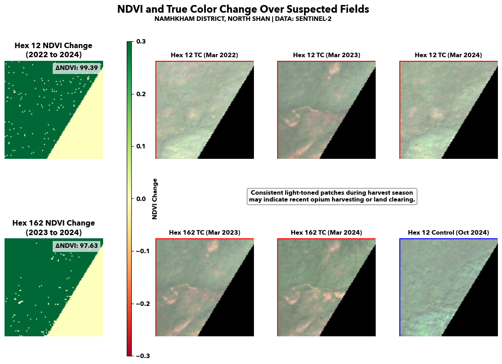
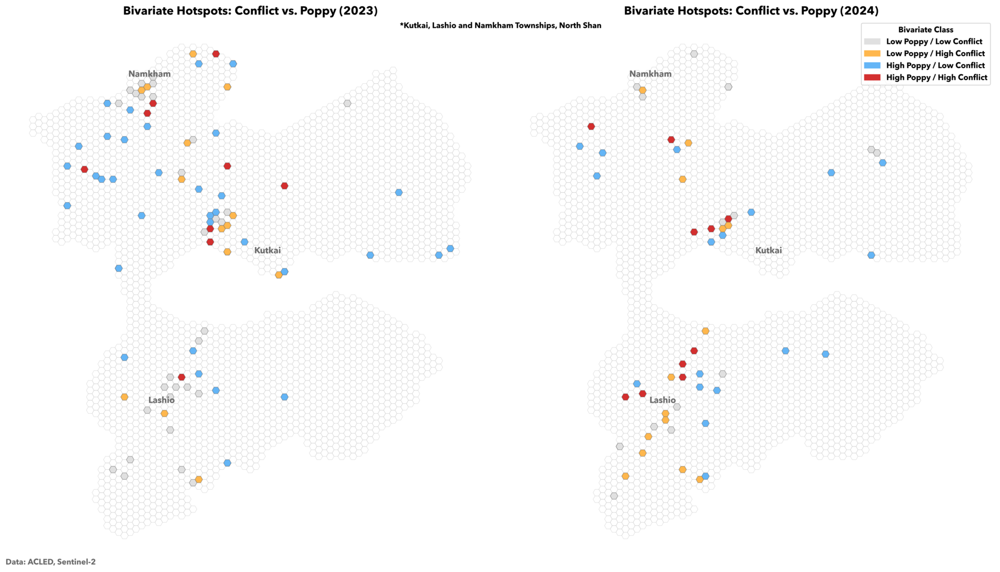

Conflict, opium & territorial control in North Shan State
I. Executive Summary
Less than two years1 after the February 2021 coup, Myanmar surpassed Afghanistan as the world’s top opium producer, with northern Shan State – and its elevated2 terrain, dense3 forests, and transnational4 smuggling routes – at the center of this shift. Long5 a site of militarized ethnic resistance, North Shan has become a nexus of narcotics, conflict, and political fragmentation. The region produced 47%6 of Myanmar’s opium in 2024, fueling a civil war7 that has claimed over 75,0007 lives since 2021.
The Tatmadaw,8 now controlling less than 25%9 of the country, faces an opposition of Ethnic Armed Organizations (EAOs) and the exiled National Unity Government’s People’s Defence Forces.10 October 2023’s Operation 102711 formalized coordination among major opposition forces, placing the military on the defensive12 and sharply escalating the conflict’s lethality. Meanwhile, economic stagnation,13 liberalization14 policies that devalued legal crops, and monopolization15 of licit markets have driven both state and non-state actors toward extractive industries – notably opium – fueling community grievances and entrenching conflict across Myanmar’s borderlands.
A spatial-temporal analysis of conflict, opium production areas, and road networks reveals three key trends:
- Since 2021, violence has shifted away from opium-producing areas: The proportion of conflict events occurring within 5 km of the China-Myanmar border rose from 4.8% pre-coup to 22.1% post-coup – a nearly fourfold increase. Over the same period, conflict events occurring near opium-growing areas declined by approximately 19%, underscoring the growing strategic importance of cross-border supply routes and contested customs points over remote production zones.
- Post-2022, conflict events became nearly four times as lethal: This development coincides with EAOs’ increasing16 use of drones, IEDs, and heavy weaponry, alongside the Tatmadaw’s escalating17 reliance on indiscriminate shelling and airstrikes as opposition offensives eroded its battlefield position.
- Transit corridors to the Chinese border, particularly NR3 northbound, attract sustained fighting: Although the share of violence along NR3 fell slightly from 43.9% to 37.4%, fighting has become more spatially dispersed, reflecting a broader strategy by opposition forces to stretch military resources and contest control across multiple fronts.
The findings reveal that while opium production remains a major feature of in North Shan, its relationship to violence is evolving. Armed groups increasingly prioritize strategic infrastructure over remote cultivation zones, and opium production itself appears vulnerable to disruption where alternative livelihoods and governance structures are introduced. However, without systemic changes to address rural economic precarity, narcotics economies are likely to persist, sustaining instability even as control over territory shifts.
II. Background: Myanmar’s Centralized Inefficiency and the Shifting Geography of Conflict
Myanmar has endured decades18 of political repression, human rights violations, and economic stagnation under a series of military regimes. Following the 1962 coup19 that ousted the elected civilian government, the military maintained its grip on power through violence and authoritarian rule, remaining the dominant political force until a formal handover20 to a nominally civilian administration in 2011. Despite this transition, the Tatmadaw retained substantial influence: its budget accounted for 14%8 of national GDP in the mid-2010s. The military’s leadership and ranks have long8 been dominated by the Bamar ethnic majority, which comprises 68%21 of the population, fueling8 grievances and inter-ethnic conflict through exclusionary and abusive practices. The Tatmadaw’s brutal tactics further alienate non-Bamar populations: nearly 16% of all conflict events in North Shan since 2018 involved military violence against civilians.
Compounding these tensions, Myanmar’s constitution enshrines22 a unitary state structure, while the country’s 13512 ethnic groups and rugged terrain limit the central government’s reach beyond its strongholds. A legacy of chronic23 economic mismanagement24 and underinvestment,25 repression of ethnic minorities, and junta dominance have created deep civilian-military distrust, undermining prospects for effective governance. This political crisis is further compounded by Myanmar’s inflexible,26 hierarchical administrative system, which concentrates power in unaccountable officials while failing to establish authority across conflict-affected regions. The system sidelines27 local input, enabling administrative abuse and impeding disaster response, as seen in the blocking of aid during Cyclones Nargis28 and Mocha.29
In North Shan and elsewhere, both the Tatmadaw and EAOs have leveraged30 the opium trade as a tool of control: the military has offered tacit approval of drug production in exchange for local security cooperation, while some EAOs publicly27 denounce drug activity while continuing to covertly benefit from it. Despite sporadic eradication campaigns, opium revenues reached up to $1.57 billion6 in 2024, driving violence and immiserating31 communities through addiction,6 HIV,27 and exploitative14 farming. Opium therefore functions less as an isolated criminal economy and more as a historically32 embedded pillar of Myanmar’s conflict system, though its longstanding role as a premier conflict financer is increasingly challenged by shifting social attitudes and the growing adoption of anti-narcotics policies among opposition groups.
Figure 1: Conflict Concentrations and Opium Growing Zones in North Shan State (2018–2025)

III. Opium, Conflict, and Territorial Control
As shown in Figure 1, conflict in North Shan state from January 2018 to March 2025 is heavily concentrated along major transit routes, particularly the NR3 corridor between Bant Bway, Lashio, Kutkai, and the Muse-Ruili border crossing. The darkest red hexes – representing the highest intensity zones comprising around 5% of total conflict events per 10×10 km cell – cluster near border crossings (Muse, Chinshwehaw, Kyin San Kyawt) and major urban centers like Lashio and Hsipaw. While some violence overlaps with opium cultivation zones, the most intense concentrations appear near infrastructure chokepoints and transport hubs, suggesting that control over trade, transit, and customs points is a core driver of post-coup violence. Figure 2 illustrates these shifting priorities over time.
The roughly 19% decrease in cultivation zone-adjacent conflict (from 35.4% in 2018–2020 to 28.7% in 2021–2025) points to shifting strategic priorities among EAOs and other armed actors: moving away from remote drug-producing areas and toward contesting critical infrastructure and urban centers where control yields greater tactical, political, and economic leverage. Greater EAO coordination following Operation 1027 may have further enabled commanders to pursue more ambitious targets as operational capacity increased. Regardless of the precise motivations, the shifting geography of conflict highlights an escalation in both the intensity and stakes of the war in North Shan.
Figure 2: Fatality-Scaled Conflict Events & Fatality Rates in North Shan State (2018-2025)

IV. Operation 1027 and the Surge in Conflict Lethality
In this context, the October 2023 launch of Operation 1027 by the Three Brotherhood Alliance – comprising the Arakan Army (AA), Ta’ang National Liberation Army (TNLA), and Myanmar National Democratic Alliance Army (MNDAA)– reshaped the military landscape in North Shan.12 Backed33 by the National Unity Government (NUG) and adopting increasingly sophisticated tactics, the offensive expanded anti-coup resistance while intensifying its overall lethality. As of early 2025, the Alliance controls more than 4034 towns across northern Myanmar. Figure 3 captures the scale of Operation 1027 in the sharp spike in conflict events and fatalities at the end of 2023, with monthly death rates nearly quadrupling compared to previous highs during its initial months.
Figure 3: Conflict Events & Fatalities in North Shan State (2018-2025)

While Figure 3 shows conflict events spiked following the 2021 coup, Figure 4 indicates violence in North Shan became consistently lethal only beginning in 2023. Fatalities per event nearly doubled between 2021 and 2022, reaching nearly one fatality per event through 2024– a striking escalation from the pre-2022 baseline of 43%. Operation 1027, reflected in the sharp spike in conflict incidents at the end of 2024, marked a turning point: EAOs adopted advanced battlefield tactics, including drone strikes35 and coordinated offensives, overwhelming many Tatmadaw positions.
In response, the Tatmadaw resorted36 to indiscriminate airstrikes, artillery shelling, and scorched-earth tactics, dramatically escalating civilian casualties without successfully reversing EAO territorial gains. Together, Figures 3 and 4 underscore this spiraling lethality, highlighting the growing destructiveness of the conflict and the increasing urgency of a negotiated ceasefire to halt the rising death toll.
Figure 4: Shifts in Conflict Tactics and Lethality in North Shan State (2018–2025)

Event analysis disaggregated by actor (Figure 5) suggests that the Tatmadaw’s increasing reliance on ordnance attacks is the primary driver of this lethality surge. Since 2022, fatalities per military ordnance event have risen more than tenfold, crossing the threshold of one death per attack. In contrast, opposition forces’ ordnance lethality has declined slightly over the same period, even amid their expanded 2024 offensives – a divergence that underscores the Tatmadaw’s escalating disregard for civilian life.
These developments have devastated civilian communities. As Operation 1027 forced the military onto the defensive, regime soldiers – many unpaid and collapsing in morale – have lashed out37 with violence. Following the March 2025 7.7-magnitude earthquake that shattered much of the military’s heartland, the Tatmadaw shredded its own three-week humanitarian ceasefire, carrying out at least 6138 bombing attacks on civilians. Some assaults reportedly used adapted “near-silent”39 paragliders to strike villages under cover of darkness, further demonstrating the military’s overt reliance on terror tactics against an already battered population.
Figure 5: Ordnance Attack Share and Fatalities by Actor, North Shan State (2022–2025)

V. Opium Production and Conflict in North Shan State: Dynamics and Responses
Northern Shan State’s high elevation, expansive trail networks, and location within the Golden Triangle have made it Myanmar’s prime40 region for opium cultivation, embedding the region within a deeply entrenched illicit economy. Although domestic crop substitution programs have offered pathways to licit livelihoods, opium has financed insurgencies since41 the 1950s and remains resilient today due to two key developments in the 1990s: junta-led trade liberalization,14 which devalued legal crops, and ceasefires42 with borderland armed groups that enabled Chinese capital to shape development priorities. Since then, Yunnan-based41 agribusinesses, extractive firms, and Belt and Road Initiative41 projects have extended China’s economic reach into northern Shan, displacing smallholders and reinforcing a resource-extractive, elite-centered growth model. China’s Opium Substitution Programs41 (OSPs)– which transform poppy plots into large-scale42 rubber, banana, or logging concessions – often bypass Myanmar’s state-led counternarcotics efforts and instead empower local elites and foreign investors.
As a result, smallholder farmers remain trapped between entrenched poverty and illicit economies. In 2024, around 26%6 of households in northern Shan still cultivated poppy despite lower yields,6 falling prices, and earnings roughly 25%6 below those of non-opium growers. These farmers, living at elevations averaging 1,2006 meters, face deep geographic isolation from markets and basic services, reinforcing their reliance on a labor-intensive, high-cost crop with diminishing returns. Irrigation, harvesting, and weeding costs now make poppy twice6 as expensive to plant as rice. While opium is primarily valued for its cash potential, most42 profits are used merely to purchase food, highlighting that poppy cultivation increasingly reflects economic desperation rather than criminal opportunity. Improving food security and supporting alternative crops – particularly rice – could begin to shift local incentives away from poppy production and sever one of the core economic pillars sustaining Myanmar’s borderland conflicts.
Figure 6: Opium Cultivation Cycle, Namkham township (2022–2024)

In Figure 6, Hex 12 (Namkham), controlled43 by the TNLA as of early 2024, March imagery shows minimal evidence of new opium clearing, contrasting sharply with the previous year’s harvest patterns. By comparison, Hex 162, located just 10 kilometers away and also near Namkham, displays persistent light-toned patches characteristic of active opium harvesting despite a nominal transition to anti-regime control. This divergence suggests that halting opium production requires more than just military victories: it depends on whether new authorities actively disrupt narcotics economies and offer viable alternatives. Where anti-narcotic interventions and livelihood support were prioritized, as in Hex 12, opium cultivation collapsed; where such efforts were absent or delayed, as in Hex 162, production continued largely unabated. This reinforces the argument that improving food security and supporting alternative crops – particularly rice – could begin to shift local incentives away from poppy production and dismantle one of the core economic pillars sustaining Myanmar’s borderland conflicts.
VI. Opium Cultivation, Armed Control, and Diverging Incentives in North Shan
Opium production in Namkham township, near the Chinese border, underscores the disjointed relationship between growing areas and persistent violence. In Figure 6, satellite imagery synced to the October – May opium growing season is combined with ACLED conflict event data to show the distribution of conflict and likely opium growing areas (Figure 7). Several patterns emerge:
- Isolated areas of production (blue and red hexes): In Figure 7, high poppy production areas are sporadic and disconnected, reflecting the crop’s demand for elevation above 1,200 meters. In general, opium cultivation is far from a widespread phenomenon in North Shan; rather, a few dozen hotspots generate most of the region’s supply.
- Influence of EAOs on effective narcotics policing: Figure 7 shows that in 2023, only three 10×10 km areas showing high poppy presence were observed within 50 km of Namkham. After the TNLA captured44 the area in December 2023 and instituted anti-narcotic rehabilitation43 programs, every high poppy producing site present in 2023 was eradicated. This suggests that, where EAOs possess both territorial control and alternative financing, they are capable of dismantling local narcotics economies – contrary to narratives portraying insurgents as uniformly reliant on the drug trade.
- Persistence of opium under fragmented control: Hex 162, despite nominal shifts in control during 2024, shows evidence of continued opium harvesting, suggesting that without sustained anti-narcotic enforcement and economic alternatives, territorial change alone is insufficient to suppress cultivation. In areas where EAOs failed to immediately consolidate authority or prioritize drug interdiction, entrenched production patterns persisted.
Figure 7: Conflict and Opium Cultivation Hotspots: Diverging Patterns in Kutkai, Lashio, and Namkham (2023–2024)

While opium production almost certainly contributes to financing conflict in Myanmar, the spatial relationship between production and violence is far from clear-cut. With cultivation concentrated in high-elevation, rugged areas that complicate sustained military operations, opium production and conflict are increasingly segregated phenomena. Moreover, opium’s declining profitability and severe social costs mean that armed groups tolerating or promoting poppy cultivation risk alienating popular support – a critical resource for sustaining insurgency. Myanmar may lead the world in opium production, but many producers and their communities are far from enthusiastic participants. In short, opium production in North Shan appears less entrenched, and more vulnerable to strategic economic interventions like crop substitution and market reforms, than is often portrayed.
VII. Conclusion and Looking Forward
The Tatmadaw is unlikely to support narcotics eradication in border regions like northern Shan, where its principal opposition is based. Although China’s crop substitution programs in Yunnan successfully curtailed the opium trade there, Myanmar lacks the flexible, well-resourced, and centrally incentivized state apparatus needed to replicate that success. That opium remains profitable for farmers even when its market value is lower than licit alternatives like rice or thanatphet reflects a deeper failure: a lack of credible, accessible cash crop options. Moreover, Myanmar’s rigidly hierarchical administrative system is ill-suited to the flexible education, implementation, and monitoring efforts needed to reach remote villages.
Transitioning farmers to rice or other foodstuffs remains the most sustainable and cost-effective pathway forward, but would require significant foreign investment – whether through bilateral partnerships, such as with China, or through regional organizations like ASEAN or the Greater Mekong Subregion (GMS),45 which already operate tested agricultural and food security programs adaptable to northern Shan’s terrain. Empowering farmers, especially in the most isolated areas, to grow legal crops for transparent, competitive markets is critical to undercutting opium’s role in financing conflict.
While opium cultivation will likely persist due to enduring global demand, local conditions are shifting. Many major EAOs have already moved to reject poppy farming because of its severe social costs, signaling a rare alignment between community needs and insurgent political strategies. Recognizing and reinforcing these qualitative shifts offers a unique opportunity to weaken the opium economy’s hold over Myanmar’s borderlands and dismantle one of the most durable drivers of regional violence.